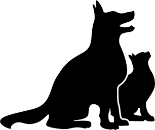
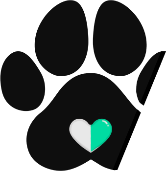

Para una mejor atención tenemos hospital con áreas separadas para perros y gatos
Traiga a su mascota a control sano, todas sus dudas con su Mascota la resolvemos aquí en Huellas del corazon
Ofrecemos atención de urgencia para sus mascotas, solo debe traerlo y estaremos disponibles para usted

En Huellas del Corazón busca mejorar la calidad de vida de los animales de compañía ofreciendo atención médica veterinaria de alta calidad. Trabajan en colaboración con cada mascota y su familia para crear un plan de tratamiento personalizado y se esfuerzan por estar actualizados en las últimas técnicas y tecnologías veterinarias. Su objetivo es promover la salud y el bienestar de todas las mascotas y brindar apoyo y educación a la comunidad de amantes de los animales.
CONTACTO
+569 943123321